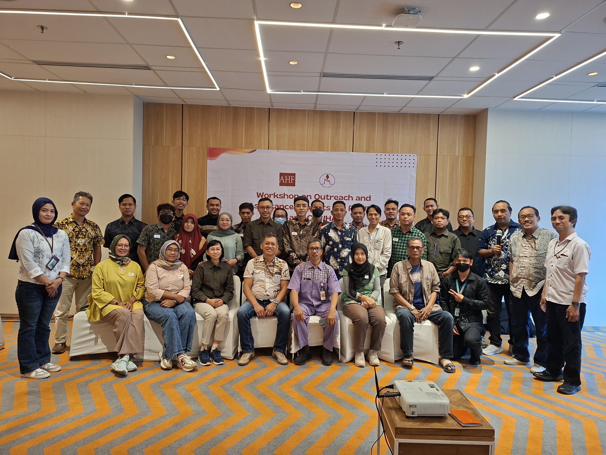
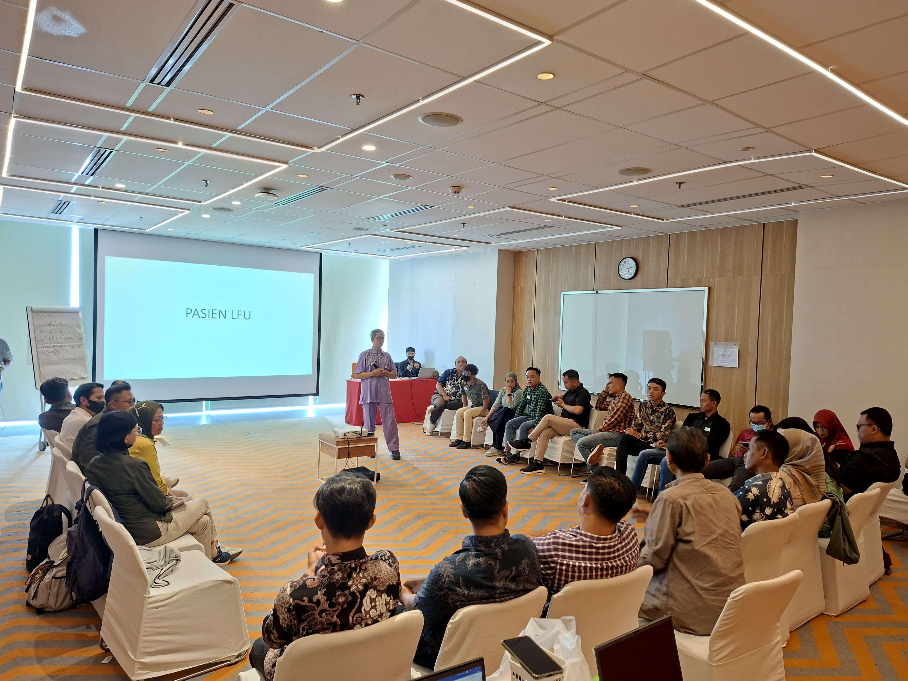

Workshop ini diikuti oleh tenaga penjangkau, pendamping sebaya, komunitas, serta mitra program HIV yang selama ini berperan langsung dalam mendukung akses layanan kesehatan, kepatuhan terapi, dan pendampingan psikososial bagi ODHIV dan ADHA. Melalui kegiatan ini, Yayasan Lentera Surakarta mendorong penguatan layanan HIV yang lebih inklusif, berkelanjutan, berbasis komunitas, serta bebas dari stigma dan diskriminasi.
Penguatan Kapasitas untuk Layanan HIV yang Lebih Responsif
Dalam kerja penjangkauan HIV, pendamping memiliki peran penting sebagai penghubung antara masyarakat, komunitas, dan layanan kesehatan. Mereka tidak hanya membantu klien mengakses informasi dan layanan, tetapi juga mendampingi proses yang sering kali penuh tantangan, mulai dari tes HIV, penerimaan status, pengobatan ARV, hingga keberlanjutan terapi.
Karena itu, peningkatan kapasitas tenaga penjangkau dan pendamping sebaya menjadi kebutuhan penting. Workshop ini dirancang untuk memperkuat pengetahuan, keterampilan komunikasi, serta kemampuan pendamping dalam memberikan dukungan yang aman, empatik, dan menghormati kerahasiaan status HIV setiap klien.
Melalui pendekatan berbasis komunitas, peserta diajak memahami bahwa layanan HIV tidak cukup hanya tersedia secara medis, tetapi juga harus dapat dijangkau, dipercaya, dan dirasakan aman oleh ODHIV, ADHA, serta kelompok masyarakat yang membutuhkan dukungan.
Mencegah Lost to Follow Up dan Memperkuat Kepatuhan Terapi ARV
Salah satu isu penting yang dibahas dalam workshop ini adalah program penurunan Lost to Follow Up atau LFU. Dalam konteks layanan HIV, LFU terjadi ketika klien tidak lagi melanjutkan kunjungan layanan, pemeriksaan, atau pengobatan sesuai jadwal yang dianjurkan. Kondisi ini dapat berdampak pada kesehatan individu dan keberhasilan program penanganan HIV secara lebih luas.
Peserta memperoleh materi mengenai strategi mendampingi ODHIV agar tetap terhubung dengan layanan kesehatan, memahami pentingnya terapi ARV, serta mampu menjaga kepatuhan pengobatan secara berkelanjutan. Kepatuhan terapi ARV menjadi salah satu kunci penting dalam menjaga kualitas hidup ODHIV, menekan perkembangan virus, dan mendukung kehidupan yang lebih sehat serta produktif.
Dalam sesi ini, narasumber menekankan bahwa pendampingan tidak dapat dilakukan dengan pendekatan yang menghakimi. Sebaliknya, pendamping perlu memahami situasi sosial, psikologis, ekonomi, dan keluarga yang dapat memengaruhi keputusan seseorang dalam melanjutkan pengobatan.

Konseling Sebaya dan Komunikasi yang Empatik
Workshop ini juga memberikan ruang bagi peserta untuk memperkuat keterampilan konseling sebaya. Dalam pendampingan HIV, komunikasi yang empatik menjadi dasar penting untuk membangun kepercayaan antara pendamping dan klien. Kepercayaan ini sangat menentukan keberhasilan proses pendampingan, terutama ketika klien menghadapi rasa takut, kebingungan, penolakan, atau tekanan sosial setelah mengetahui status HIV-nya.
Melalui sesi diskusi dan praktik pendampingan, peserta diajak memahami cara mendengarkan tanpa menghakimi, memberikan informasi dengan bahasa yang mudah dipahami, serta mendukung klien dalam mengambil keputusan terkait tes HIV, pengobatan ARV, dan dukungan psikososial.
Pendamping juga diingatkan tentang pentingnya menjaga kerahasiaan status HIV. Kerahasiaan bukan hanya bagian dari etika layanan, tetapi juga bentuk penghormatan terhadap martabat, rasa aman, dan hak setiap individu.
Menjangkau Populasi Kunci dan Memperluas Akses Layanan Kesehatan
Selain membahas pendampingan bagi ODHIV dan ADHA, workshop ini juga menyoroti pentingnya strategi penjangkauan populasi kunci. Dalam program pencegahan dan penanganan HIV, penjangkauan yang tepat menjadi pintu masuk untuk memperluas akses terhadap informasi, tes HIV, konseling, pengobatan, dan layanan kesehatan lainnya.
Peserta diajak memahami bahwa setiap kelompok memiliki kebutuhan, pengalaman, dan hambatan yang berbeda dalam mengakses layanan. Karena itu, pendekatan penjangkauan harus dilakukan secara sensitif, manusiawi, dan berbasis pada penghormatan terhadap hak kesehatan.
Layanan HIV yang inklusif harus mampu menjangkau mereka yang selama ini berada di pinggir sistem layanan, baik karena stigma, keterbatasan informasi, hambatan ekonomi, maupun ketakutan terhadap diskriminasi.
Mengurangi Stigma dan Diskriminasi terhadap ODHIV dan ADHA
Stigma dan diskriminasi masih menjadi tantangan besar dalam upaya pencegahan dan penanganan HIV. Banyak orang takut melakukan tes HIV atau mengakses layanan kesehatan karena khawatir dinilai buruk, dikucilkan, atau kehilangan dukungan sosial.
Dalam workshop ini, peserta diajak melihat bahwa stigma tidak hanya melukai secara psikologis, tetapi juga dapat menghambat seseorang untuk mendapatkan layanan yang dibutuhkan. Ketika stigma dibiarkan, orang dapat terlambat mengetahui status HIV, enggan memulai pengobatan, atau tidak melanjutkan terapi secara teratur.
Karena itu, mengurangi stigma dan diskriminasi terhadap ODHIV dan ADHA menjadi bagian penting dari kerja pendampingan. Setiap pendamping, komunitas, dan mitra program memiliki peran untuk menghadirkan ruang yang aman, mendukung, dan tidak menghakimi.
Kolaborasi untuk Layanan HIV yang Berkelanjutan
Narasumber dalam workshop ini juga menekankan pentingnya kolaborasi antara komunitas, layanan kesehatan, pemerintah, organisasi masyarakat sipil, dan mitra program. Penanganan HIV tidak dapat dilakukan oleh satu pihak saja. Diperlukan kerja bersama yang terkoordinasi agar layanan dapat berjalan secara berkelanjutan dan menjangkau lebih banyak orang.
Kolaborasi ini penting untuk memperkuat sistem rujukan, meningkatkan kualitas pendampingan, memperluas edukasi HIV dan AIDS, serta memastikan bahwa ODHIV dan ADHA mendapatkan dukungan yang komprehensif. Dukungan tersebut tidak hanya berkaitan dengan aspek medis, tetapi juga menyangkut kondisi sosial, psikologis, pendidikan, keluarga, dan lingkungan sekitar.
Melalui sinergi lintas sektor, layanan HIV diharapkan dapat menjadi lebih responsif terhadap kebutuhan masyarakat serta lebih kuat dalam menghadapi tantangan stigma, keterbatasan akses, dan keberlanjutan program.
Memperkuat Peran Pendamping sebagai Fasilitator Perubahan
Workshop Penguatan Penjangkauan dan Pendampingan HIV ini diharapkan dapat memperkuat peran pendamping sebagai fasilitator yang membantu ODHIV dan ADHA mengakses layanan kesehatan, mempertahankan kepatuhan terapi ARV, serta meningkatkan kualitas hidup tanpa stigma dan diskriminasi.
Pendamping bukan hanya penyampai informasi. Pendamping adalah bagian dari jejaring dukungan yang membantu seseorang merasa tidak sendirian dalam menghadapi proses kesehatan dan kehidupan sosialnya. Dengan pengetahuan yang kuat, keterampilan komunikasi yang baik, dan keberpihakan pada nilai kemanusiaan, pendamping dapat menjadi jembatan penting menuju layanan HIV yang lebih inklusif dan berkelanjutan.
Melalui kegiatan ini, Yayasan Lentera Surakarta menegaskan komitmennya untuk terus mendukung program pencegahan HIV, pendampingan ODHIV dan ADHA, edukasi masyarakat, serta penguatan layanan berbasis komunitas yang aman, manusiawi, dan bebas stigma.
Bersama komunitas, layanan kesehatan, pemerintah, dan mitra program, Yayasan Lentera Surakarta terus bergerak untuk menghadirkan pendampingan HIV yang lebih peduli, inklusif, dan berkelanjutan.